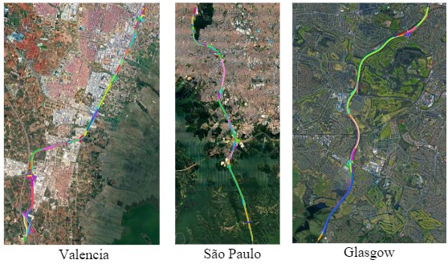
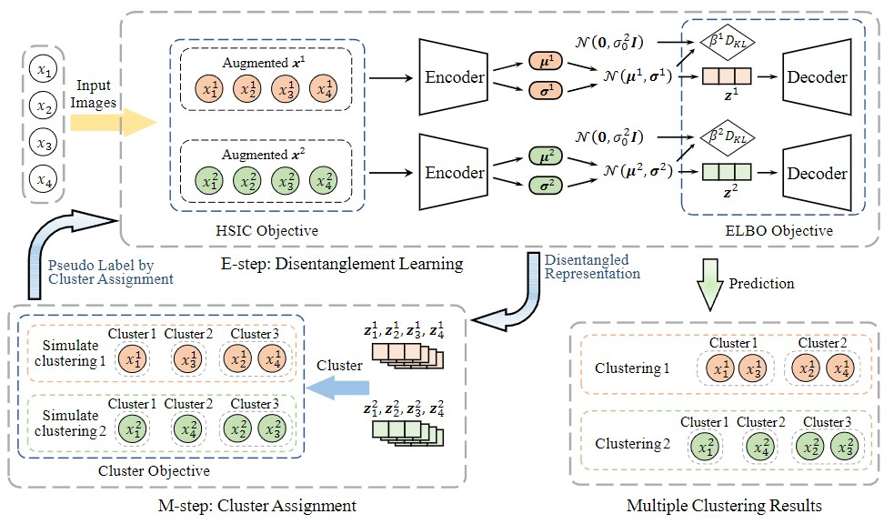

About me
I'm a Ph.D. student at University of Washongton Tacoma, supervised by Prof. Juhua Hu. My current research focuses on computer vision and data mining. I obtained my Master’s degree from University of Washongton Tacoma and Bachelor's degree in Beijing University of Posts and Telecommunications (BUPT).
Publications
- 
- Multi-Modal Proxy Learning Towards Personalized Visual Multiple Clustering
- Jiawei Yao, Qi Qian, Juhua Hu
- The IEEE/CVF Conference on Computer Vision and Pattern Recognition (CVPR), 2024
- [Paper], [Code]
- 
- Dual-disentangled Deep Multiple Clustering
- Jiawei Yao, Juhua Hu
- SIAM International Conference on Data Mining (SDM), 2024
- [Paper], [Code]
- Building Lane-Level Maps from Aerial Images
- Jiawei Yao, Xiaochao Pan*, Tong Wu, Xiaofeng Zhang
- IEEE International Conference on Acoustics, Speech and Signal Processing (ICASSP), 2024
- * equal contribution
- [Paper], [Code]
- Ndc-scene: Boost monocular 3d semantic scene completion in normalized device coordinates space
- Jiawei Yao, Chuming Li*, Keqiang Sun*, Yingjie Cai, Wanli Ouyang, Hongsheng Li
- * equal contribution
- International Conference on Computer Vision (ICCV), 2023
- [Paper], [Project page], [Code]
Awards
Services
I serve as a reviewer for IJCAI 2024; IJCNN 2024; Pattern Recognition; Information Fusion.